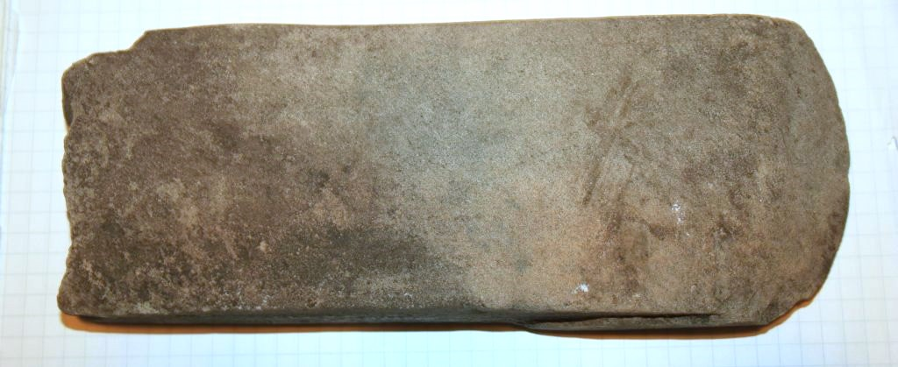
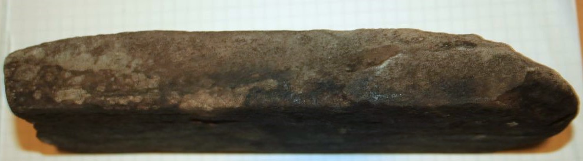
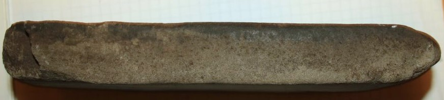
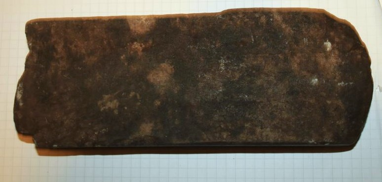
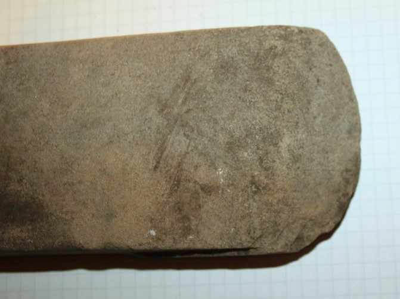
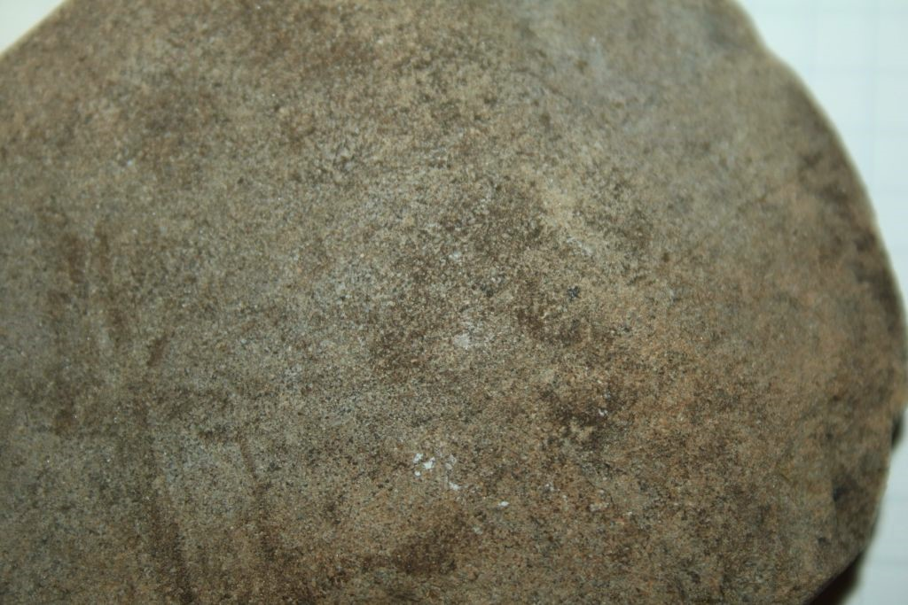
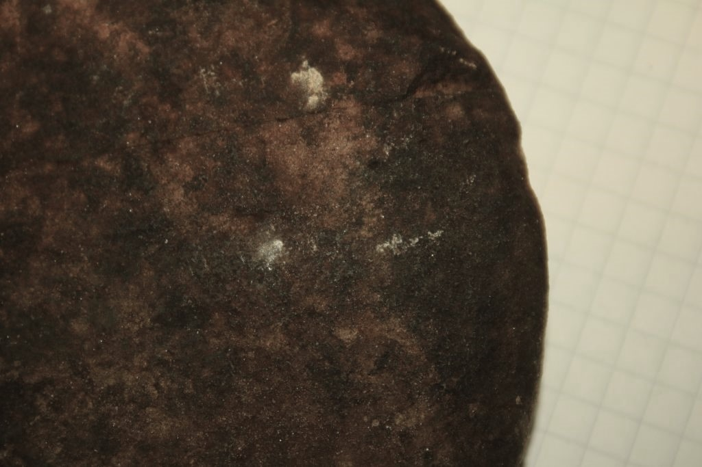
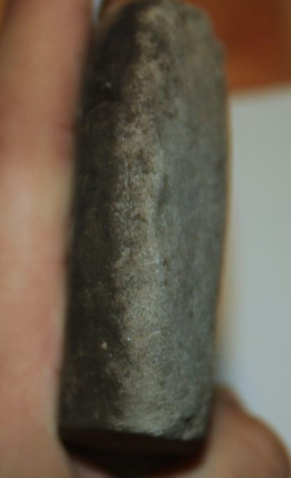

À propos de la tête de hache Innu
Lors d'une randonnée sur l'île Grande Basque à Sept-Îles, je suis tombé sur une roche qui, pour une raison que j’ignore, a attiré mon regard. Elle était à moitié enfouie dans le sol et la partie émergée avait une forme étrangement carrée. Alors je l’ai déterrée en me disant : « Qu’est-ce que ça coûte de regarder ? » Je l’ai sortie sans grande difficulté et prise dans mes mains. Mon excitation fut à son comble : sa forme parfaitement rectangulaire, ses côtés très droits, il n’y avait aucun doute, cette roche avait déjà rencontré l’humanité. D’ailleurs, une des extrémités se terminait en pointe, comme si on avait voulu en faire un outil.
Par la suite, j’ai laissé la roche dans un coin de mon placard et je l’ai oubliée. J’étais jeune à l’époque et je n’avais pas vraiment l’œil d’un archéologue. Deux ans plus tard, j’ai reçu un poste comme animateur en chef au Musée régional de la Côte-Nord. J’en ai profité pour faire confirmer mes impressions au sujet de cette roche. C’est alors que j’ai fait la connaissance de Steve Dubreuil, l’anthropologue du Musée régional de la Côte-Nord. Il a confirmé mes soupçons : cette roche était bel et bien un artefact de la vie humaine avant l’arrivée des Européens. « À en juger par la forme rectangulaire, l’extrémité en pointe et les traces de frottement, je dirais que c’était une tête de hache innue. » Il m’a expliqué que les Innus prenaient une roche solide, probablement sur les côtes de l’île Grande Basque, puis la frottaient contre un gros rocher jusqu’à lui donner la forme voulue. Pour réaffûter la hache, il suffisait de frotter la pointe contre la pierre. Quant au manche, il s’était naturellement décomposé avec le temps.
On m’a proposé de donner mon artefact au musée, mais je pensais qu’il aurait plus de visibilité si je le gardais moi-même plutôt que de le savoir rangé dans un entrepôt souterrain. J’ai donc choisi de le garder et de le mettre bien en évidence dans ma chambre.
Avec mon expérience au musée, j’avais accumulé des connaissances en archéologie : j’avais lu quelques livres, discuté avec plusieurs professionnels, et affûté mon regard. La question naturelle s’est alors imposée : « Quelle est l’histoire de cette tête de hache ? » En effet, une telle pièce devait prendre beaucoup de temps à fabriquer, probablement une vingtaine de jours. Je ne voyais pas pourquoi un Innu aurait abandonné sa hache en pleine forêt.
Il faut savoir que l’île Grande Basque, qui étais surtout une île il y a plusieurs millénaires, se trouve à l’embouchure de la rivière Moisie. Or, beaucoup d’Innus qui quittaient leur territoire pour les saisons chaudes passaient par là. Les îles, par leur particularité d’être des îles, sont naturellement des points de repère et de rassemblement. De plus, elles se trouvent dans des eaux plus profondes où l’on pêche davantage de poissons, phoques et baleines. Enfin, exposées aux vents du fleuve, elles offrent un bouclier naturel contre les moustiques, ce qui était très appréciable à cette période de l’année. Tout cela explique la présence autochtone sur l’île Grande Basque. Quant à la hache, il est clair que personne ne l’aurait volontairement abandonnée. Les ressources étaient trop précieuses : les Innus, nomades, transportaient tout avec eux et ne laissaient derrière que des déchets comme des os ou des outils cassés. L’hypothèse la plus probable est qu’un bûcheron innu l’ait posée quelque part pour se reposer ou faire autre chose, puis qu’il l’ait simplement perdue. Comme quoi, le TDAH existait peut-être déjà à l’époque.
À en juger par la technologie, et en comparant avec d’autres haches similaires trouvées ailleurs au Québec, je dirais que celle-ci a été créée entre 3000 et 8000 ans avant aujourd’hui. Les Innus avaient eux aussi leurs techniques : ils perfectionnaient le choix des matériaux (certaines pierres étant plus solides ou plus faciles à travailler, parfois même des os), amélioraient leurs méthodes de taille pour obtenir des tranchants ou des formes variées, et ajoutaient des accessoires (manche en bois ou en os, ficelle, colle de bouleau). Même sans datation au carbone 14, on peut estimer l’âge de certains objets grâce au niveau d’avancement technologique. Mais comme la plupart de leurs outils étaient biodégradables, il ne reste souvent que des pierres comme témoins de leur passage.
Voilà comment s’est déroulée ma première expérience archéologique. J’ai fait d’autres découvertes depuis, et il m’en reste sûrement beaucoup devant moi. Il suffit de garder l’œil ouvert, d’être attentif aux détails, d’avoir un minimum de connaissances… et surtout de sortir dehors de temps en temps. Parfois je me dis qu’un Innu, il y a 4000 ans, aurait pu faire cette même découverte : après tout, la pierre n’était pas enterrée profondément et aurait pu intriguer n’importe qui. Les Innus savaient qu’ils n’étaient pas les premiers sur leur territoire ; ils avaient leurs propres récits de création du monde, mais ils comprenaient aussi que les anciens laissaient des traces derrière eux. Peut-être cette pierre a-t-elle été taillée par un Innu, retrouvée 2000 ans plus tard par un autre, réutilisée, reperdue, puis finalement ramassée par moi. Et qui sait, elle sera peut-être un jour réutilisée par un autre Innu de Sept-Îles. Après tout, est-ce que cela dénaturerait vraiment l’artefact ?







